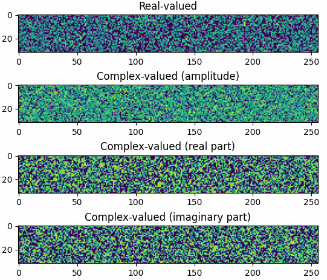
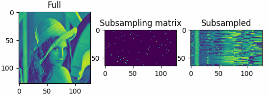
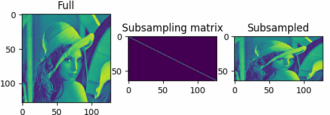
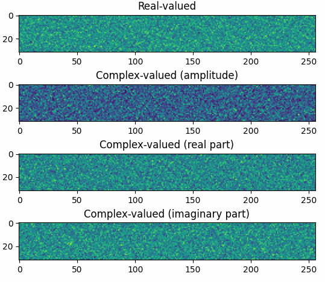

torchcs.sensing package¶
Submodules¶
torchcs.sensing.bernoullis module¶
- torchcs.sensing.bernoullis.bernoulli(shape, seed=None, norm=True, rmmean=False, dtype='float32', device='cpu')¶
generates Bernoulli observation matrix
Generates M-by-N Bernoulli observation matrix which have Bernoulli distribution elements( columns are l2 normalized).
- Parameters
shape (list or tuple) – shape of Gauss observation matrix [M, N]
seed (int or None, optional) – the seed for random number generator, by default None
norm (bool, optional) – normalize the columns of observation matrix, by default True
rmmean (bool, optional) – remove the mean values before normalization, by default False
dtype (str, optional) – torch’s data type, such as
'float32','float64','complex64','complex128', by default'float32'device (str, optional) – generates data on the specified device, supported are
'cpu','cuda:x', where, x is the cuda device’s id.
- Returns
Bernoulli observation matrix \(\bm A\).
- Return type
th.Tensor
Examples
The results shown in the above figure can be obtained by the following codes.
import torchcs as tc import matplotlib.pyplot as plt PhiReal = tc.bernoulli((32, 256), dtype='float32') PhiCplx = tc.bernoulli((32, 256), dtype='complex64') print(PhiReal.shape) print(PhiCplx.shape) plt.figure() plt.subplot(411) plt.imshow(PhiReal) plt.title('Real-valued') plt.subplot(412) plt.imshow(PhiCplx.abs()) plt.title('Complex-valued (amplitude)') plt.subplot(413) plt.imshow(PhiCplx.real) plt.title('Complex-valued (real part)') plt.subplot(414) plt.imshow(PhiCplx.imag) plt.title('Complex-valued (imaginary part)') plt.show()
{kind=link}
torchcs.sensing.binary module¶
- torchcs.sensing.binary.brandom(shape, dtype='float32', device='cpu')¶
generates binary-random subsampling matrix
Generates M-by-N binary-random observation matrix which have uniform distribution elements.
- Parameters
- Returns
binary-random subsampling observation matrix \(\bm A\).
- Return type
th.Tensor
Examples
The results shown in the above figure can be obtained by the following codes.
import torchbox as tb imgfile = tb.data_path('optical') + 'LenaGRAY128.png' X = tb.imread(imgfile)* 1. Phi = tb.brandom(shape=(64, 128)) print(Phi.shape) Y = Phi @ X plt = tb.imshow([X, Phi, Y], titles=['Full', 'Subsampling matrix', 'Subsampled']) plt.show()
{kind=link}
- torchcs.sensing.binary.buniform(shape, dtype='float32', device='cpu')¶
generates binary-uniform subsampling matrix
Generates M-by-N binary-uniform observation matrix.
- Parameters
- Returns
binary-uniform subsampling observation matrix \(\bm A\).
- Return type
th.Tensor
Examples
The results shown in the above figure can be obtained by the following codes.
import torchbox as tb imgfile = tb.data_path('optical') + 'LenaGRAY128.png' X = tb.imread(imgfile)* 1. Phi = tb.buniform(shape=(64, 128)) print(Phi.shape) Y = Phi @ X plt = tb.imshow([X, Phi, Y], titles=['Full', 'Subsampling matrix', 'Subsampled']) plt.show()
{kind=link}
torchcs.sensing.gaussians module¶
- torchcs.sensing.gaussians.gaussian(shape, seed=None, norm=True, rmmean=True, dtype='float32', device='cpu')¶
generates Gaussian observation matrix
Generates M-by-N Gaussian observation matrix which have gaussian distribution elements( columns are l2 normalized).
\[{\bm \Phi} \sim {\mathcal N}(0, \frac{1}{M}) \]- Parameters
shape (list or tuple) – shape of Gauss observation matrix [M, N]
seed (int or None, optional) – the seed of the random number generator, by default None
norm (bool, optional) – normalize the columns of observation matrix, by default True
rmmean (bool, optional) – remove the mean values before normalization, by default True
dtype (str, optional) – torch’s data type, such as
'float32','float64','complex64','complex128', by default'float32'device (str, optional) – generates data on the specified device, supported are
'cpu','cuda:x', where, x is the cuda device’s id.
- Returns
Gauss observation matrix \(\bm A\).
- Return type
th.Tensor
Examples
The results shown in the above figure can be obtained by the following codes.
import torchcs as tc import matplotlib.pyplot as plt PhiReal = tc.gaussian((32, 256), dtype='float32') PhiCplx = tc.gaussian((32, 256), dtype='complex64') print(PhiReal.shape) print(PhiCplx.shape) plt.figure() plt.subplot(411) plt.imshow(PhiReal) plt.title('Real-valued') plt.subplot(412) plt.imshow(PhiCplx.abs()) plt.title('Complex-valued (amplitude)') plt.subplot(413) plt.imshow(PhiCplx.real) plt.title('Complex-valued (real part)') plt.subplot(414) plt.imshow(PhiCplx.imag) plt.title('Complex-valued (imaginary part)') plt.show()
{kind=link}
torchcs.sensing.toeplitz module¶
- torchcs.sensing.toeplitz.toeplitz(shape, verbose=True)¶
generates Toeplitz observation matrix
Generates M-by-N Toeplitz observation matrix
\[{\bm \Phi}_{ij} = \left[\begin{array}{ccccc}{a_{0}} & {a_{-1}} & {a_{-2}} & {\cdots} & {a_{-n+1}} \\ {a_{1}} & {a_{0}} & {a_{-1}} & {\cdots} & {a_{-n+2}} \\ {a_{2}} & {a_{1}} & {a_{0}} & {\cdots} & {a_{-n+3}} \\ {\vdots} & {\vdots} & {\vdots} & {\ddots} & {\vdots} \\ {a_{n-1}} & {a_{n-2}} & {a_{n-3}} & {\cdots} & {a_{0}}\end{array}\right] \]- Parameters
shape (list or tuple) – shape of Toeplitz observation matrix [M, N]
- Keyword Arguments
verbose (bool) – display log info (default: {True})
- Returns
A – Toeplitz observation matrix \(\bm A\).
- Return type
ndarray